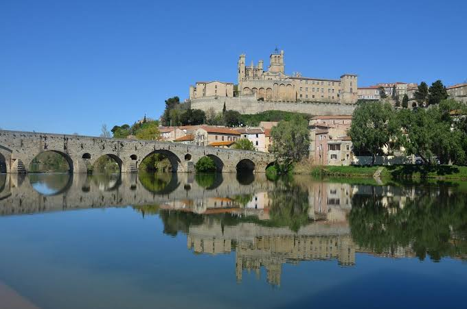

Cathédrale
Saint-Nazaire


⟹ Édifices religieux ⟸
Un sanctuaire ancien sur l’acropole de Béziers. Saint-Nazaire-et-Saint-Celse occupe le promontoire dominant l’Orb, au cœur de l’ancienne cité. Une église y est attestée au haut Moyen Âge et devient le siège de l’évêque de Béziers.
La cathédrale romane. Aux XIe et XIIe siècles, l’essor de la ville entraîne la construction d’un vaste sanctuaire roman, associé au cloître et aux bâtiments épiscopaux. Une partie de ses maçonneries subsiste dans l’édifice actuel.

22 juillet 1209 : le sac de Béziers. Au début de la croisade contre les Albigeois, l’armée croisée prend la ville et massacre une partie de sa population. La cathédrale, où des habitants se sont réfugiés, est touchée par l’incendie et ses voûtes s’effondrent en partie. Ce traumatisme marque durablement l’histoire biterroise.
La reconstruction gothique. Dès le XIIIe siècle, le chantier reprend en réutilisant des structures romanes. Les campagnes des XIIIe et XIVe siècles donnent au monument son puissant caractère de gothique méridional : volumes massifs, grande nef, chapelles et silhouette presque fortifiée dominant la vallée de l’Orb.
Le cœur du diocèse de Béziers. Pendant tout le Moyen Âge et l’époque moderne, Saint-Nazaire demeure le centre religieux du diocèse. Le chapitre administre la cathédrale et ses biens, tandis que les évêques jouent un rôle majeur dans la cité. Aux XVIe et XVIIe siècles, les guerres de Religion puis les réaménagements de l’époque moderne modifient encore l’ensemble épiscopal.
Révolution et disparition du diocèse. La réorganisation ecclésiastique révolutionnaire supprime l’ancien diocèse de Béziers. Le Concordat de 1801-1802 ne le rétablit pas et son territoire est rattaché à Montpellier. Saint-Nazaire perd donc son statut de siège épiscopal, même si le nom de « cathédrale » demeure dans l’usage.
Un monument emblématique. L’édifice et son cloître figurent sur la liste des Monuments historiques de 1840. Restaurée aux XIXe et XXe siècles, Saint-Nazaire est devenue l’un des symboles de Béziers : sa silhouette monumentale conserve à la fois la mémoire de la cathédrale romane, du drame de 1209 et de la reconstruction gothique.
Un site religieux très ancien. Le promontoire de Saint-Nazaire correspond à l’un des secteurs les plus anciennement occupés de Béziers. La tradition et les données patrimoniales situent l’édifice chrétien dans la continuité d’occupations antiques. Une église est connue sur le site dès le haut Moyen Âge, avant que Saint-Nazaire ne devienne le centre du groupe épiscopal biterrois.
La grande cathédrale romane. Au XIe et surtout au XIIe siècle, l’ancienne église est remplacée par une cathédrale romane plus ambitieuse. Le pape Urbain II consacre la cathédrale en 1096. Le chantier roman se poursuit et l’édifice est associé au nom du maître Gervais. Plusieurs maçonneries de cette phase ont été conservées et intégrées dans la reconstruction gothique, faisant de Saint-Nazaire un véritable « millefeuille » architectural.
1209, une rupture historique. Le 22 juillet 1209, au début de la croisade contre les Albigeois, Béziers est prise par l’armée croisée. La ville subit un massacre et de nombreux bâtiments sont incendiés. La cathédrale romane est très gravement touchée ; l’incendie et l’effondrement d’une partie des structures imposent une reconstruction de grande ampleur. L’événement demeure l’un des épisodes les plus marquants de la mémoire de Béziers.
Reconstruire après la croisade. La reconstruction ne consiste pas à effacer totalement l’édifice précédent : les bâtisseurs réemploient des murs et des éléments romans tout en transformant profondément le monument. Dès le XIIIe siècle, le transept et le chœur font l’objet de nouveaux projets. En 1267, le chapitre sollicite notamment l’espace nécessaire à l’agrandissement du chœur ; des autorisations royales sont accordées à la fin des années 1260. Le chantier progresse cependant lentement, en raison des ressources limitées du diocèse.
Le gothique méridional. Les grandes campagnes des XIIIe, XIVe et XVe siècles donnent à Saint-Nazaire son aspect actuel. Contrairement au gothique très ajouré du nord de la France, l’architecture méridionale privilégie ici la puissance des masses, les murs épais et une silhouette presque militaire. La position dominante de la cathédrale, au bord de l’ancienne enceinte, renforce encore cette impression de forteresse.
Le cloître et le quartier épiscopal. La cathédrale forme au Moyen Âge un ensemble avec le cloître, les bâtiments du chapitre et le palais de l’évêque. Reconstruit lui aussi après les destructions du XIIIe siècle, le quartier épiscopal est ensuite remanié à plusieurs reprises. Le cloître gothique reste inachevé par endroits, témoignage des difficultés financières qui accompagnèrent certains chantiers.
Des siècles d’aménagements. Du XVIe au XVIIIe siècle, l’intérieur est régulièrement adapté aux évolutions liturgiques et artistiques. Chapelles, décors, mobilier et orgues enrichissent progressivement l’édifice. Le grand orgue, avec son buffet monumental, participe aujourd’hui encore à la réputation artistique et musicale de Saint-Nazaire.
La fin du diocèse de Béziers. La Révolution française bouleverse l’organisation ecclésiastique. L’ancien diocèse de Béziers disparaît lors de la réorganisation des diocèses français. Saint-Nazaire perd donc son rang de cathédrale au sens administratif, mais conserve dans l’usage son appellation traditionnelle et demeure l’un des principaux monuments religieux de la ville.
Le XIXe siècle et la naissance du patrimoine monumental. La cathédrale est classée parmi les Monuments historiques dès 1840, au moment où la France met en place une politique nationale de sauvegarde des grands édifices médiévaux. Des restaurations sont alors entreprises pour consolider les maçonneries, préserver les sculptures et maintenir la cohérence de l’ensemble.
Une mémoire de pierre de Béziers. Saint-Nazaire résume à elle seule une grande partie de l’histoire biterroise : héritage antique et paléochrétien, puissance de l’évêché médiéval, traumatisme de 1209, reconstruction gothique, transformations modernes et sauvegarde patrimoniale. Son implantation spectaculaire au-dessus de l’Orb en fait à la fois un monument religieux, un repère urbain et l’un des symboles les plus forts de Béziers.